KuroEditor 操作マニュアル
記事を書く人のためのガイドです。ボタンの場所だけでなく、 知らないと戸惑うところ（改行と段落の違いや Tab がどこに効くかなど）を中心にまとめています。 組み込み方や API についてはトップページと GitHub の README をご覧ください。
画面の見かた
画面の上に、下の図と同じ 2 段のツールバーがあります。
| 場所 | 役割 |
|---|---|
| 上のタブバー | モード切替（ 編集 / 閲覧 / HTML）・自動保存・ 保存・ このマニュアル・ 目次の開閉。 |
| その下の段 | 元に戻す・ やり直し・ 😊 絵文字・ 表・ 🖼 画像や動画・ コード・ 水平線・ 角丸ボックス・ リンク・ レシピカード。右端に文字数。 |
| 本文（キャンバス） | 書くところ。表示は公開ページとほぼ同じ見た目です。 |
| 下に浮くメニュー | 上の段と同じ並びのメニュー。スマホでも指の届く位置に出ます。スクロール方式によっては表示されない事も多いモーダルメニューです。 |
このほかに、文字を選択したときだけ選択範囲の上（または下）に浮かぶメニューがあります。 文字装飾・見出し・リスト・コールアウトなどは、ここから使います。
文字数
本文の文字数が、ツールバー下段の右端に出ます。書くにつれて数字がリールのように回ります。 画面が狭くて下段に収まらないときだけ、上段の目次ボタンの左へ移ります。
- 数えるのは本文のテキストだけです（見出しやリストの文字も含みます）。
- 連続する空白・改行はまとめて 1 文字として数え、前後の空白は数えません。
- 絵文字や結合文字も見た目どおり 1 文字として数えます。
バージョン表示
エディターの版（ のような番号）は、ふつうは画面の左上のバッジに出ます。 ただし表示する場所はアプリ側の設定で決まっていて、画面の右下に出るアプリや、 まったく表示しないアプリもあります。 不具合を報告して頂くときにこの番号を添えて頂けると、原因がすぐ絞れて助かります。
3 つのモード
| タブ | できること |
|---|---|
| 編集 | 通常の執筆モード。すべての機能が使えます。 |
| 閲覧 | 編集しない読むためのモード。カーソルも編集メニューも出ません。編集モードだとポップアップメニューが邪魔になるので、書きあがった記事を読み返すときに。 |
| HTML | HTML を直接編集します。慣れている方向け。 |
閲覧モードでリンクをクリックすると、いきなり移動せず 「このリンクを新しいタブで開きますか？」と確認が出ます。 読んでいる途中で記事から飛ばされないための動きです。
保存と元に戻す
- 保存 — タブバー右上の 保存。未保存の変更があるときだけ光ります。
- 自動保存 — チェックを入れておくと、編集が落ち着いたタイミングで自動的に保存されます。
- 元に戻す / やり直し — Ctrl/⌘+Z と Ctrl/⌘+Shift+Z（または Ctrl+Y）。連続して打った文字はまとめて 1 手として戻ります（最大 200 手）。
改行と段落 — Enter と Shift+Enter の違い
見た目はどちらも「次の行に移る」ですが、中身は別物です。 ここを知っておくと、後の字下げや装飾で戸惑わなくなります。
| キー | 結果 | 意味 |
|---|---|---|
| Enter | 段落が分かれる | 別々のかたまりになる。行ごとに字下げ・寄せ・見出し化ができる。下段の改行よりも、ほんの少し行間の空白が広くなる。 |
| Shift+Enter | 同じ段落の中で改行する | 見た目は 2 行でも、エディターからは1 かたまり。行間が詰まる。 |
使い分けの目安は「意味のまとまりが変わるなら Enter、 同じ文の中で見た目を折り返したいだけなら Shift+Enter」です。 住所や詩のように「詰めて並べたい数行」は Shift+Enter が向いています。
文字の装飾
文字を選択すると出るポップアップメニューから操作します。
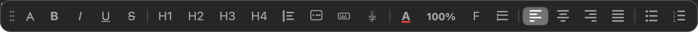
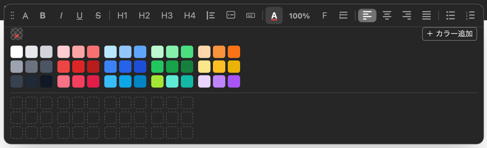
| 機能 | 内容 |
|---|---|
| 太字・斜体・下線・打ち消し線 | Ctrl/⌘+B / I / U でも。 |
| 文字色 | パレットから選択（背景色はありません）。 |
| 見出し | H1〜H4。付けた見出しは右の目次に自動で並びます。 |
| 文字サイズ | 75 / 85 / 100（基準） / 120 / 150 / 175 / 200%。 |
| 行間 | 詰め 1.2 / 狭め 1.4 / 標準 1.6 / 広め 1.8 / 2 倍 / 2.5 倍。 |
| 寄せ | 左・中央・右・均等割り。 |
| フォント | ゴシック（初期）／明朝。サイト側が Web フォントを読み込んでいれば、それも選べます。 |
| 引用 | 選んだ段落を引用にします。引用の中の空行で Enter を押すと引用から抜けます。 |
| キー表記 | 選んだ文字を Ctrl のようなキー風の表示にします。もう一度押すと戻ります。 |
ふつうの段落です。太字・斜体・下線・打ち消し線、
文字色、大きな文字も使えます。
引用にすると、左に線が付いて斜体になります。
キー表記は Ctrl+S のように出ます。
字下げ — Tab と Shift+Tab
Tab で 1 段（約 2 文字分）下げ、Shift+Tab で戻します。 行頭で Backspace を押しても 1 段戻ります。 複数行を選択していれば、選択にかかっている行すべてが動きます。
効く相手は決まっています。
| 対象 | Tab の動き |
|---|---|
| 段落・見出し・表のセル | その行が 1 段下がる |
| リストの項目 | 字下げではなく階層が 1 段深くなる（箇条書き参照） |
| 囲み（コールアウト・角丸ボックス・引用・表そのもの） | 動きません。枠の中の行が動きます |
箇条書き・番号付きリスト
複数行を選択してポップアップメニューのリストボタンから作ります。記号は後から選び直せます。
- 記号リスト（13 種） — ● ○ ■ - # * > ◎ ★ ☆ ▶ ▷ とチェックリスト。
- 番号リスト（7 種） — 1. ① (1) A. (A) ア (ア)。
- 行頭から作る — 行の先頭で
1.＋スペースで番号リスト、記号＋スペースで記号リストになります。
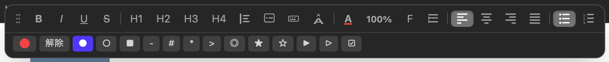
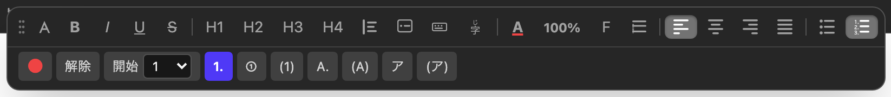
- 記号リスト（●）
- 初期の記号です
- 記号を ★ に変えた例
- 13 種から選べます
- 番号リスト（1.）
- 自動で番号が振られます
- 丸数字（①）にした例
- 7 種から選べます
階層（入れ子）にする
| キー | 動き |
|---|---|
| Tab | 1 つ前の項目の子にする（＝ 1 段深くなる）。子リストの記号は親から引き継ぎます。 |
| Shift+Tab | 1 段浅くする。下にぶら下がっていた項目は順序を保ったまま付いてきます。 |
いちばん上の項目は入れ子にできません（親になる項目が無いため）。1 つ上に項目を作ってから Tab してください。
子リストの記号は、作られた時点では親から引き継ぎます。 あとから子リストだけ別の記号にしたいときは、その子リストの項目を選んで、 変えたい記号をクリックします（親の記号は変わりません）。 逆に親の項目を選んで押せば、親のリストだけが変わります。
- 親の項目
- Tab で 1 段深くした子項目
- 記号は親から引き継ぎます
- 次の親の項目
リストをやめる（「解除」は 2 段階）
- 1 回目 — 記号だけが消えます。項目の位置と階層はそのまま。
- 2 回目 — リストから抜けて普通の段落に戻ります。
深い階層の項目をいきなり段落に戻すと、左端まで飛び出して位置が分からなくなるための 2 段階です。 いまどちらの動きになるかは、ボタンにマウスを乗せると説明が出ます。
チェックリスト（Todo）
記号リストの記号のひとつです。マーカー選択パネルの ☑︎、または
行頭で [] ＋スペース（[x] ＋スペースなら最初からチェック済み）で作れます。
- チェックの切り替え — 箱をクリック / タップします。文字の上を押したときは普通にカーソルが立つので、編集の邪魔になりません。
- 普通の箇条書きと同じなので、Enter で次の項目・太字やリンクもそのまま使えます。
- 他の記号に切り替えてもチェックは消えません（見えなくなるだけで、☑︎ に戻せば復活します）。
- 牛乳を買う
- 卵を買う
- パンを買う
コールアウト（囲み）
段落を選んでポップアップメニューから 💡 ヒント / ⚠️ 注意 / ❗ 警告 / 📌 メモ の 4 種類に変換します。 同じ種類をもう一度選ぶと解除、別の種類を選ぶと種類だけ変わります。
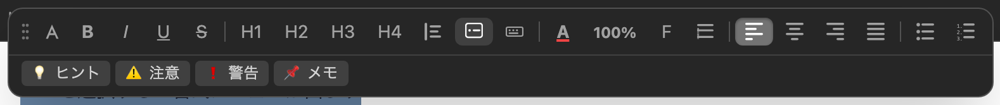
- 囲みの中で行を増やすときは Enter。行ごとに字下げや寄せをしたいなら必ず Enter で分けてください。
- 囲みから抜けるには、空行で Enter。囲みの下に新しい段落ができます。
ヒント — 補足や豆知識を添えるときに。
注意 — 読み飛ばすと困ることに。
警告 — 取り返しがつかない操作の手前に。
メモ — 本筋から少し外れる補足に。
角丸ボックス
で挿入します。中には普通に文章・画像・表などを入れられます。 カーソルがボックスの中にある間だけ、専用の BOX 設定メニューが浮きます。
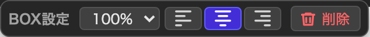
| 設定 | 内容 |
|---|---|
| 横幅 | 30〜100%（初期 100%）。 |
| 配置 | 左寄せ / 中央 / 右寄せ。左右に寄せると、続く文章が横に回り込みます。 |
| 入れ子 | 角丸ボックスの中に角丸ボックスを入れられます（中側は背景が少し薄くなります）。 |
| 削除 | BOX 設定メニューの「🗑 削除」。 |
横幅 100%（初期値）の角丸ボックスです。中には文章も画像も表も入ります。
入れ子にすると、中側は背景が少し薄くなります。
横幅 45%・右寄せ。
右寄せ・左寄せにすると、続く文章がこのように横へ回り込みます。回り込みを終わらせたいところに水平線を入れると、そこで区切られます。
コードブロック
- で挿入。行番号付きで、高さは中身に合わせて伸びます。
- 中では Tab / Shift+Tab がそのままインデントとして使えます。
- 右上の 📋 でコピー、その左の 🗑 で削除。
- 行番号の部分をドラッグすると、ブロックごと上下に移動できます。
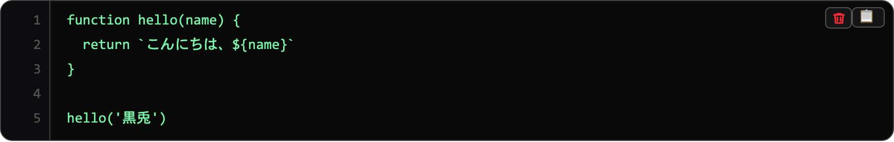
function hello(name) {
return `こんにちは、${name}`
}水平線
で挿入します。太さや点線を選べます。 水平線は「ここで区切る」ための線なので、画像や角丸ボックスの回り込みがあっても その下まで送られて、必ず横いっぱいに引かれます（＝水平線を入れると回り込みは終わります）。
ここまでが前の話。
ここから次の話。
表
から挿入します。KuroEditor の表はかなり細かく調整できます。
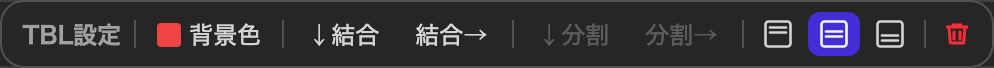
| 操作 | やり方 |
|---|---|
| 行・列を足す | セルの境目にカーソルを寄せると出る ＋ をクリック。 |
| 行・列を消す | 同じ位置に出る − をクリック。 |
| 列の幅 | 罫線の上をドラッグ。 |
| 罫線 | 罫線の上をクリックすると、外枠 / 中の罫線 / この 1 本だけを選び、点線・細線・普通線・太線と色を指定できます。 |
| セルの背景色 | セルにカーソルを置くと出る表メニューの「背景色」から、パレットで選びます。 |
| セルの連結 | 表メニューの「右と連結」「下と連結」。端では押せません。 |
| 縦位置 | セルの中身を 上 / 中央 / 下 に揃えられます。 |
| 表ごと削除 | 表メニュー右端の 🗑。 |
| 材料 | 分量 |
|---|---|
| 玉ねぎ | 1 個 |
| 塩 | 少々 |
画像・動画・音声
入れ方は 3 通りです。
- 🖼 からファイルを選ぶ、または URL を入力する
- 本文にドラッグ＆ドロップする
- クリップボードの画像をそのまま貼り付ける
画像・動画（mp4 / webm / mov）・音声（mp3 / wav など）に対応し、 YouTube や Vimeo の URL を入れると 16:9 の埋め込みになります。
挿入したメディアをクリックすると専用メニューが出て、その場で変えられます。
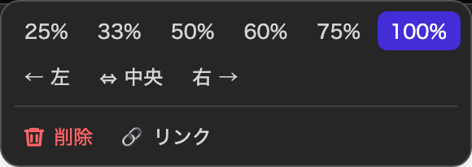
| 項目 | 内容 |
|---|---|
| サイズ | 25 / 33 / 50 / 60 / 75 / 100%。90% 以下にすると文章が横に回り込みます。 |
| 配置 | 左（回り込み）/ 中央 / 右（回り込み）。 |
| クリックリンク | 画像にリンクを付けられます。付けると「↗ 新しいタブで開く」ボタンも出ます。 |
| 削除 | メニューの「🗑 削除」。 |

画像を 40%・右寄せにすると、このように文章が左側へ回り込みます。100% のままなら回り込みは起きず、画像の下に文章が続きます。
回り込みをここで終わらせたいときは、水平線を入れます。
リンクと URL カード
リンクを作る
を押すとリンク入力のポップアップが開きます。 先に文字を選択しておくと、その文字が表示テキストの初期値になります。 URL を入れずに閉じれば、本文には何も残りません。
リンクを直す
本文のリンクをクリックすると（移動はせずに）編集ポップアップが開き、URL と表示テキストを直せます。 右端の 🗑 でリンクを削除できます（文字は残り、リンクだけが外れます）。
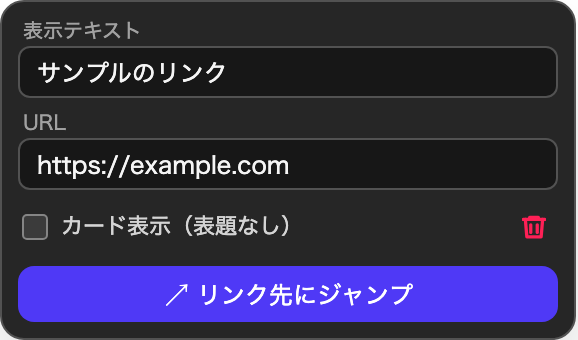
URL カード
リンク編集ポップアップの「カード表示（表題なし）」にチェックを入れると、 青い文字リンクではなくカード（アイコン＋タイトル＋URL）で表示されます。 参考リンクを目立たせたいときに便利です。
ふつうのリンクは このように青い文字で出ます。
🌐 KuroEditor 操作マニュアル kuro.boo/kuroeditor/guide/絵文字
- 😊 からピッカーを開いて選びます。
:smile::fire::+1:のようなショートコードを打つと自動で絵文字に変わります。
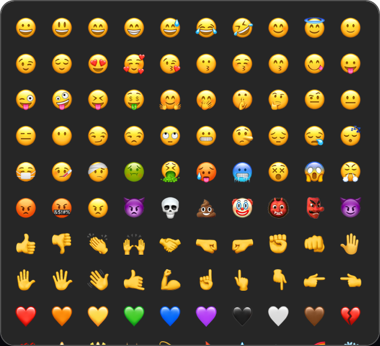
レシピカード
料理レシピを扱うサイト向けの機能です（サイト側で有効にしている場合だけ が出ます）。 人数・調理時間・材料・手順をまとめた 1 枚のカードとして本文に置けます。
- 編集はカードをクリックして開くモーダルから行います。
- 1 記事に 1 枚だけです。すでに 1 枚あるとボタンは灰色になり、理由が説明として出ます。
材料
- 玉ねぎ1 個
- オリーブオイル大さじ 1
- 塩少々
手順
- 玉ねぎを薄切りにする。
- 弱火で 10 分ほど、あめ色になるまで炒める。
- 塩で味を調えて完成。
目次（見出しから自動生成）
本文に付けた見出しから、右側のパネルに目次が自動で作られます。 タブバー右上の か Alt+T で開閉、境目のドラッグで幅を変えられます。 見出しが 1 つも無い記事では自動的に隠れます。
キーボードショートカット
| キー | 動作 |
|---|---|
| Ctrl/⌘+B / I / U | 太字 / 斜体 / 下線 |
| Ctrl/⌘+Z | 元に戻す |
| Ctrl/⌘+Shift+Z / Ctrl+Y | やり直し |
| Enter | 段落を分ける |
| Shift+Enter | 同じ段落の中で改行する |
| Enter（空行で） | 引用・コールアウトから抜ける |
| Tab / Shift+Tab | 字下げ / 戻す（リストの中では階層の出し入れ） |
| 行頭で Backspace | 字下げを 1 段戻す |
| Alt+T | 目次の表示 / 非表示 |
閲覧モードでは、装飾と元に戻す系のショートカットは効きません。
困ったときは
コールアウトの中で Tab を押したら、全部の行が動いた
その囲みの中身が Shift+Enter で改行された1 つの段落になっています。 字下げは段落ごとに効くので全部動きます。行ごとに動かしたい場所は、改行を Enter で入れ直して段落に分けてください （改行と段落）。
囲みの中で Tab を押しても何も起きない
囲みの中身が段落になっていない（文字が直接置かれている）場合です。 その行を Enter で作り直すと字下げできるようになります。囲みそのものは Tab では動きません。
下に浮くメニューが出てこない
アプリの KuroEditor の設定によって、非表示にすることがあります。 同じ並びのボタンは上のツールバーの下段にもあるので、そちらから操作できます。
日本語の変換確定で Enter を押したら、変なことが起きる
変換確定の Enter は「文字の確定」として扱われ、改行やダイアログの確定には使われないようになっています。 もし変換確定でポップアップが閉じるなどの動きがあれば、それは不具合です。報告して頂けると助かります。
公開ページで、編集画面と見た目が違う
本文のスタイルは公開ページと共有しているので、基本的には同じに見えます。 違って見える場合は、サイト側のテーマの影響か、記事の保存が済んでいない可能性があります。
チェックリストを読者に押してもらいたい
公開ページのチェックは表示だけで、読者が押しても変わりません（チェックリスト）。 読者ごとの状態を保存する仕組みが必要なので、サイト側での対応になります。
間違って消してしまった
Ctrl/⌘+Z で戻せます。表の削除・リンクの解除・画像の削除など、 ボタンで行った操作もすべて履歴に残っています。
このページで解決しないことがあれば、 GitHub の Issues でお知らせください。実際に触って試したい場合はサンプルページが便利です。